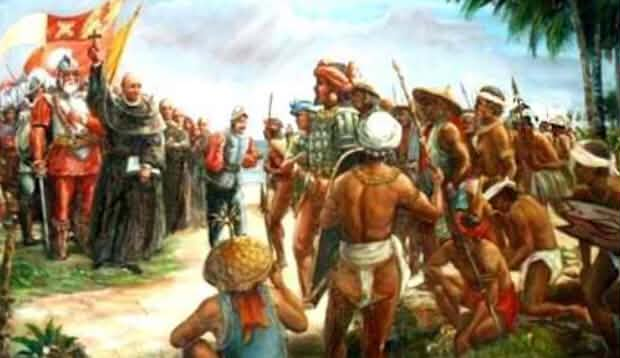
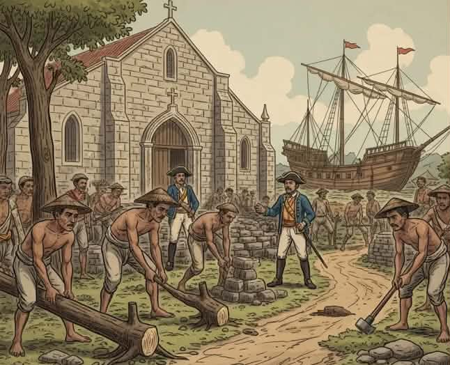
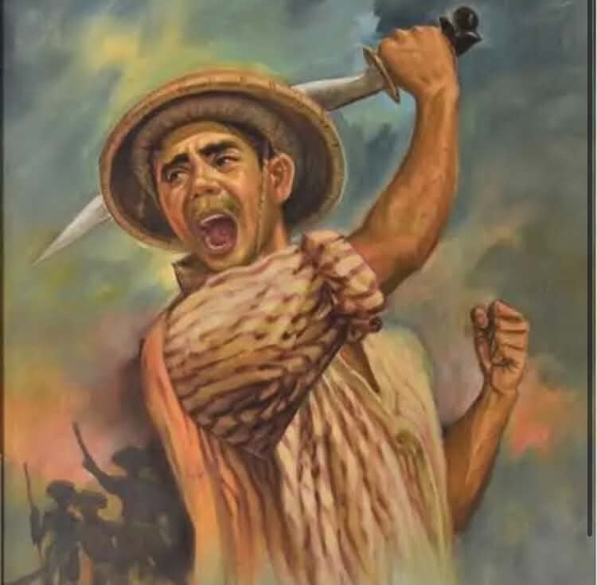
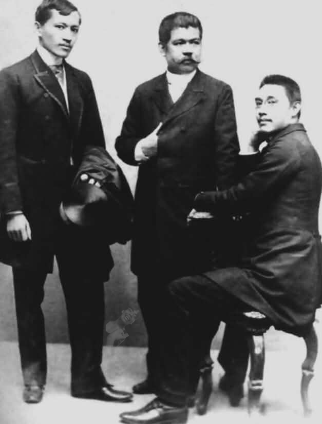
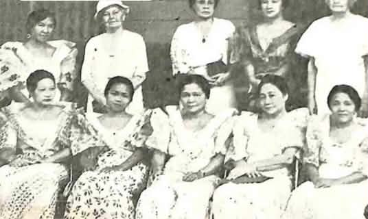
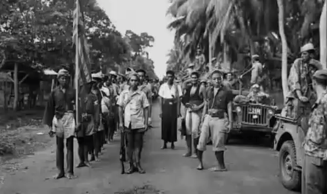

Bakit mahalagang pag-aralan ang pakikibaka at pakikiangkop?
Sa panahon ng pananakop, nakaranas ang mga Pilipino ng pang-aapi at pagbabago sa kanilang pamumuhay. May mga lumaban, may gumamit ng panulat at organisasyon, at mayroon ding umangkop upang makapamuhay at mapanatili ang sariling pagkakakilanlan.
Nakatulong ang mga karanasang ito sa pag-usbong ng kamalayang Pilipino—ang pagkilala sa sariling karapatan, kasaysayan, at pagkakaisa bilang isang bayan.

Layunin ng aralin: Maipaliwanag ang kahulugan ng pakikibaka at pakikiangkop, matukoy ang mga halimbawa nito sa kasaysayan, at masuri kung paano nakatulong ang mga ito sa paghubog ng pambansang kamalayan.
Ano ang pakikibaka at pakikiangkop?
Pakikibaka
Paglaban at pagtutolAng pakikibaka ay pagkilos upang labanan ang pananakop, pang-aapi, at kawalan ng katarungan. Maaari itong gawin sa pamamagitan ng pag-aalsa, pagsusulat, pag-oorganisa, at mapayapang pagpapahayag.
Pakikiangkop
Pag-aangkop sa pagbabagoAng pakikiangkop ay pag-aadjust sa nagbabagong kalagayan o sistema. May mga Pilipinong umangkop sa ilang kaugalian at patakaran ng mga dayuhan upang makapamuhay at mapangalagaan ang kanilang pamilya.
Hindi ibig sabihin nito na lubos nilang sinang-ayunan ang pananakop. Minsan, ang pag-angkop ay paraan upang makaraos, samantalang pinananatili ang sariling wika, tradisyon, at paniniwala.
Mga Halimbawa ng Pakikiangkop sa Panahon ng Kolonyalismo
Natutunan ng mga Pilipino ang wikang Espanyol at Ingles upang makapag-aral at makilahok sa bagong sistema ng edukasyon.
Tinanggap ng maraming Pilipino ang Kristiyanismo habang pinananatili rin ang ilang katutubong paniniwala at tradisyon.
Naimpluwensiyahan ang pananamit, pagkain, musika, at kaugalian ng mga Pilipino ng kulturang dayuhan.
Nag-adjust ang mga mamamayan sa mga bagong batas, patakaran, at sistemang ipinatupad ng mga mananakop.
Pakikibaka
“Paano natin tututulan ang hindi makatarungan?” Nakatuon sa paglaban at pagbabago.
Pakikiangkop
“Paano tayo makapamumuhay sa nagbago nating kalagayan?” Nakatuon sa pag-aadjust at pagpapatuloy.
Mga dahilan at anyo ng paglaban sa kolonyalismong Espanyol
Sa panahon ng Espanyol, naging dahilan ng pagtutol ang mabibigat na buwis, sapilitang paggawa, diskriminasyon, at mga suliranin sa lupa.
Hindi pantay na pagtrato
May mga Pilipinong nakaranas ng diskriminasyon at limitadong pagkakataon sa ilalim ng kolonyal na sistema.
Buwis at sapilitang paggawa
Ang mga patakaran sa pagbubuwis at polo y servicio ay nagdagdag ng pasanin sa maraming mamamayan.
Kawalan ng kapangyarihan
Nasa kamay ng mga kolonyal na pinuno ang pangunahing kapangyarihan sa pamamahala at paggawa ng mga patakaran.
Usapin sa lupa
Ang pagbabago sa kontrol at pagmamay-ari ng lupa ay nagdulot ng alitan sa pagitan ng mga magsasaka, pamayanan, at makapangyarihang institusyon.

Kilusang Agraryo noong ika-18 at ika-19 na siglo
Ang kilusang agraryo ay mga pagkilos ng mga magsasaka laban sa kawalang-katarungan sa pagmamay-ari at paggamit ng lupa. Ipinakita nito na mahalaga ang lupa sa kabuhayan at dignidad ng mga pamayanan.
Isang mahalagang halimbawa ng mahabang paglaban noong panahon ng Espanyol ang Pag-aalsa ni Francisco Dagohoy sa Bohol, na tumagal mula 1744 hanggang 1829. Nagtatag si Dagohoy ng sariling pamahalaan sa bahagi ng Bohol habang nagpapatuloy ang rebelyon. Ipinakita nito na kayang mag-organisa ng mga pamayanan upang tutulan ang kapangyarihang kolonyal.

Kilusang Propaganda
Sa Kilusang Propaganda, ginamit ng mga ilustrado ang pagsusulat at pahayagan upang ilantad ang pang-aabuso at humingi ng reporma. Kabilang kina Jose Rizal, Marcelo H. del Pilar, at Graciano Lopez Jaena ang mga pangunahing personalidad nito. Mahalaga ring lathalain ang La Solidaridad.
Layunin nitong isulong ang pantay na pagtrato, representasyon, at pagbabago sa mapaniil na patakaran. Pinalawak ng kanilang mga akda ang kamalayang makabayan.

Himagsikan ni Bonifacio at Rebolusyon ni Aguinaldo
Nang hindi makamit ang reporma, itinatag ni Andres Bonifacio at ng mga kasama niya ang Katipunan upang ipaglaban ang kalayaan. Nagsimula ang himagsikan noong 1896. Naging mahalagang pinuno rin si Emilio Aguinaldo, at ipinahayag ang kalayaan noong Hunyo 12, 1898.
Hindi natapos ang pakikibaka sa deklarasyon ng kalayaan dahil sumunod ang tunggalian laban sa panibagong kapangyarihang kolonyal. Gayunman, ipinakita ng himagsikan ang lumalawak na paniniwala na ang mga Pilipino ay may karapatang mamahala sa sariling bayan.
Kilusang Feminista: pakikibaka para sa karapatan ng kababaihan
Sa panahon ng Amerikano, nagsikap ang kababaihan na makamit ang pantay na karapatan at mas malaking papel sa lipunan at pamahalaan.
Aktibismong Panuelo
Ang Aktibismong Panuelo ay halimbawa ng pakikilahok ng kababaihan sa mga gawaing pampubliko upang maipahayag ang kanilang mga saloobin at adbokasiya.
Kilusang Sufragista
Ang mga sufragista ay nagsulong ng karapatang bumoto ng kababaihan. Noong 1937, nagkaroon ng plebisito na nagbigay-daan sa pagkilala sa karapatang bumoto ng mga babae.
Itinatag ni Concepcion Felix ang Asociacion Feminista Filipina noong 1905 upang isulong ang kapakanan at pakikilahok ng kababaihan.

Bunga: Nakatulong ang kilusang feminista sa pagpapalawak ng papel ng kababaihan sa lipunan at pamahalaan. Ipinakita nitong ang pambansang kamalayan ay dapat kumilala rin sa karapatan at ambag ng kababaihan.
Kilusang Gerilya laban sa pananakop ng Hapones
Sa panahon ng pananakop ng mga Hapones, maraming Pilipino ang sumali sa mga pangkat-gerilya. Ipinagpatuloy nila ang paglaban at tumulong sa pagbibigay ng impormasyon at suporta sa mga puwersang lumalaban.
Hunters-ROTC Guerrillas
Binubuo ito ng mga dating kasapi ng ROTC at iba pang Pilipinong lumaban sa pananakop ng Hapones.
Huk Amazons
Mga kababaihang nakilahok sa kilusang Huk at tumulong sa paglaban noong panahon ng digmaan.
Mga Igorot sa Labanang Pockets
Ipinakita ng kanilang pakikilahok ang kahalagahan ng kaalaman sa sariling lugar at pagkakaisa ng pamayanan sa panahon ng pananakop.

Ano ang kaugnayan nito sa ating buhay ngayon?
Makikita pa rin sa kasalukuyan ang pakikibaka at pakikiangkop. Ang pakikibaka ay makikita sa mapayapang pagpapahayag ng saloobin, paghingi ng pananagutan, pagtatanggol sa karapatan, at pakikilahok sa mga usaping pangkomunidad. Samantala, ang pakikiangkop ay makikita sa pag-aaral ng bagong teknolohiya, pag-adjust sa pagbabago ng trabaho at edukasyon, at paghahanap ng paraan upang makayanan ang mga bagong hamon.
Gayunman, mahalagang maging mapanuri. Hindi lahat ng pagbabago ay dapat tanggapin nang walang tanong. Dapat suriin kung ang isang patakaran o kalagayan ay makatarungan at kung nakabubuti ito sa nakararami. Maaari tayong umangkop sa mga pagbabagong makatutulong, habang naninindigan laban sa pang-aapi at kawalan ng katarungan.
Pangunahing mensahe: Ang kamalayang Pilipino ay hindi basta nabuo. Hinubog ito ng maraming henerasyon ng mga taong lumaban, nag-organisa, nagpahayag ng kanilang saloobin, at humanap ng paraan upang mabuhay sa gitna ng pagbabago.